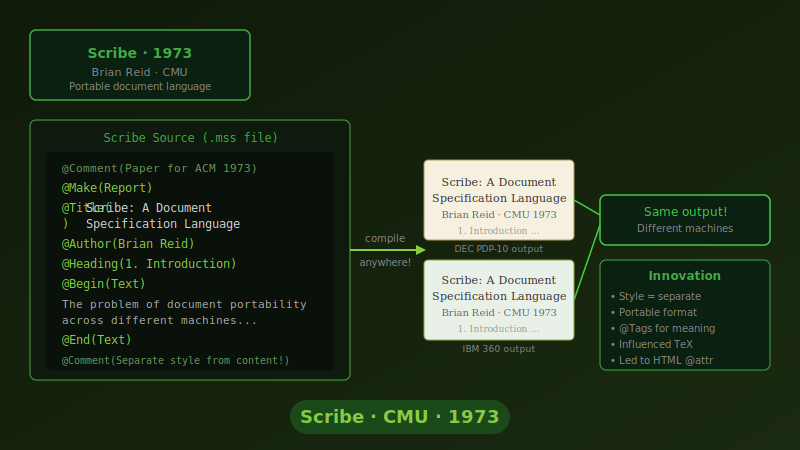
연구실 학생들은 다른 학교 컴퓨터로 파일을 보내면 글꼴과 여백이 망가지는 일에 지쳤습니다. 리드는 `@Heading`처럼 번역하기 쉬운 기호를 만들어 “어디서 읽든 이건
제목”이라고 알리기로 했습니다.
다른 캠퍼스 메인프레임에서 출력해 본 동료는 “구조가 그대로 살아 있잖아!”라며 고개를 끄덕였습니다. 곧 학회는 논문 양식으로 Scribe를 채택했고, 문서 담당자는 “기계가
달라1970년대 초, 서로 다른 컴퓨터 시스템 간에 문서를 교환할 때 서식이 깨지는 호환성 문제는 큰 골칫거리였습니다. 카네기멜런 대학교의 브라이언 리드는 이 문제를 해결하기 위해 Scribe라는 새로운 마크업 언어를 고안했습니다. 그는 특정 프린터나 화면에 종속된 명령어 대신, `@Heading`과 같이 문서의 논리적 요소를 명시하는 방식을 채택했습니다.
Scribe로 작성된 문서는 어떤 시스템에서 출력하든 본래의 구조와 의도를 정확하게 유지했습니다. 이러한 높은 이식성과 안정성 덕분에 학계와 연구 기관들은 Scribe를 논문 및 기술 문서 작성의 표준 도구로 빠르게 받아들였습니다.
Scribe는 문서의 논리적 구조를 정의하는 마크업과 이를 시각적으로 렌더링하는 스타일 정의를 명확히 분리한 선구적인 시스템입니다. '한 번 작성하면 어디서든 동일하게 출력된다'는 이 개념은 플랫폼 독립적인 문서 교환의 가능성을 입증했으며, 이후 등장한 웹 표준 기술들의 아키텍처에 깊은 영감을 주
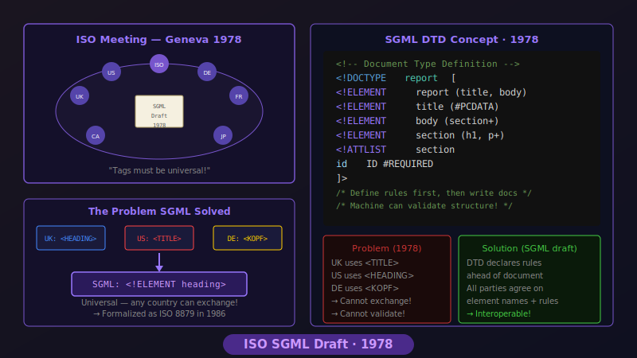
제네바 회의실에서 ISO 위원들은 항공 매뉴얼, 법령 문서를 차례로 펼쳤습니다. 영국 대표는 “같은 구조인데 태그 이름이 조금씩 달라서 서로 못 읽습니다”라고 토로했습니다.
위원회는 태그 목록을 미리 약속해 두는 “문서 선언서(DTD)” 개념을 담은 초안을 내놓고 각국 기관에 시범 사용을 부탁했습니다. 공공 기록 보관소 담당자는 “이제 문서
구조를 먼저 알리고 주고받을 수 있겠네요.”라며 안도의 한숨을 쉬었습니다.
국제적인 데이터 교환이 증가하면서, 각 기관과 국가마다 서로 다른 마크업 규칙을 사용하는 파편화 문제가 대두되었습니다. ISO(국제표준화기구) 위원회는 방대한 산업 매뉴얼과 공공 문서를 통합적으로 관리할 수 있는 범용적인 표준의 필요성을 절감했습니다.
이에 위원회는 문서에 사용될 태그의 종류와 규칙을 사전에 정의하는 DTD(Document Type Definition) 개념을 도입한 SGML 초안을 발표했습니다. 이를 통해 데이터를 주고받는 양측이 문서의 구조를 명확히 이해하고 검증할 수 있는 체계적인 기반이 마련되었습니다.
SGML 초안의 핵심은 마크업 언어 자체를 정의할 수 있는 메타 언어(Meta-language)로서의 기능을 제안한 것입니다. DTD를 통해 문서의 구조적 규칙을 명세화함으로써, 이기종 시스템 간의 정확하고 신뢰성 있는 데이터 교환이 가능해졌으며, 이는 1986년 국제 표준 제정의 결정적인 계기가
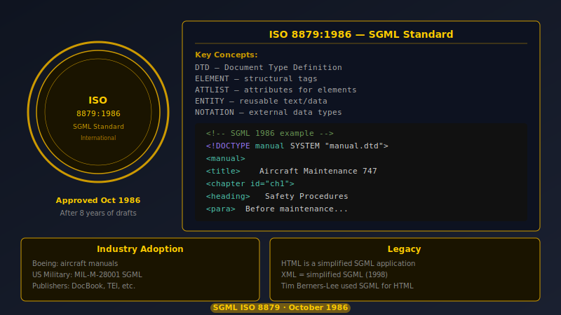
ISO 총회에서 승인 소식이 나오자 항공 매뉴얼 담당자는 문서 시스템을 업데이트했습니다. 그는 “태그 규칙을 표준으로 등록하면 부품 카탈로그가 자동으로 맞춰져요”라고 동료에게
설명했습니다.
전문 출판사는 SGML을 읽을 수 있는 프로그램을 도입해 수백 페이지 매뉴얼을 인쇄물과 데이터 파일로 동시에 뽑는 시범을 진행했습니다. 고객은 “같은 내용을 책으로도,
데이터베이스에서도 바로 받을 수 있네요”라고 답했습니다.
수년간의 논의와 검증 끝에 SGML이 ISO 8879 국제 표준으로 공식 승인되었습니다. 이는 항공우주, 국방, 출판 등 방대한 문서를 다루는 산업계에 혁신적인 변화를 가져왔습니다. 기업들은 복잡한 기술 매뉴얼과 카탈로그를 SGML 기반의 데이터베이스로 전환하기 시작했습니다.
표준화된 구조 덕분에 하나의 원본 데이터에서 인쇄용 책자, 전자 문서, 검색 가능한 데이터베이스 등 다양한 형태의 결과물을 자동으로 생성하는 '단일 출판(Single-source publishing)' 워크플로우가 실현되었습니다. 이는 정보 관리의 효율성을 비약적으로 끌어올렸습니다.
HTML은 SGML의 복잡한 문법을 과감히 덜어내고, 하이퍼텍스트라는 개념을 결합하여 웹의 대중화를 이끈 핵심 기술입니다. 문서 간의 비선형적 연결을 가능하게 함으로써 정보 탐색의 새로운 패러다임을 제시했으며, 오늘날 우리가 사용하는 월드 와이드 웹(WWW)의 진정한 출발점이 year">1995
HTML 2.0, 웹의 공통 언어를 확정하다
IETF가 첫 공식 HTML 설명서를 발표하자 브라우저 개발사는 “이제 같은 문서를 같이 해석할 수 있다”고 안도했습니다.
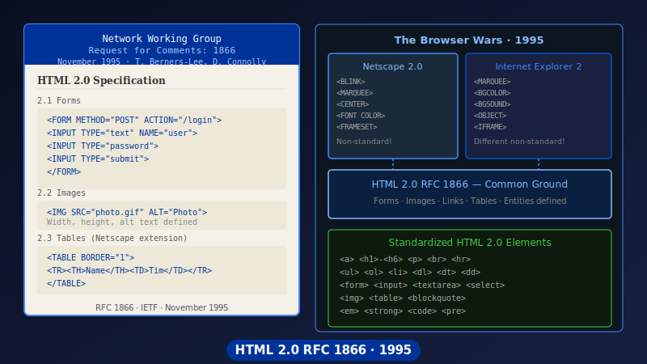
IETF 회의에서 HTML 워킹그룹은 폼, 이미지, 링크를 어떻게 작성할지 정리한 문서를 배포했습니다. 넷스케이프 엔지니어는 “이제 폼 제출과 표 구조를 같은 방식으로
구현하겠네요”라고 말했고, 마이크로소프트 팀도 곧바로 적용 계획을 세웠습니다.
RFC 1866이 공개되자 인터넷 업체의 기술지원팀은 “브라우저마다 결과가 다르다”는 문의가 조금씩 줄고 있다고 보고했습니다.
HTML 2.0 설명서는 “이 태그는 무엇을 뜻하고, 브라우저는 어떻게 처리해야 하는가”를 적어 둔 첫 공식 문서입니다. 공통 약속이 생기면서 도구가 웹 문서를 믿고 읽을 수
있게 되었고, 이후 더 많은 의미 태그를 추가할 토대가 마련됐습니다.
웹이 폭발적으로 성장하면서 다양한 브라우저가 등장했고, 각기 다른 방식으로 HTML을 해석하여 화면이 깨지는 문제가 빈번하게 발생했습니다. 이에 국제 인터넷 표준화 기구인 IETF는 웹 생태계의 혼란을 방지하고자 HTML 2.0 명세서(RFC 1866)를 공식 발표했습니다.
이 표준안은 텍스트 구조화뿐만 아니라 이미지 삽입, 사용자 입력을 받는 폼(Form) 등 웹의 핵심 기능들에 대한 명확한 구현 기준을 제시했습니다. 주요 브라우저 개발사들이 이 표준을 수용하면서, 개발자들은 어떤 환경에서도 일관되게 동작하는 웹 페이지를 구축할 수 있게 되었습니다.
HTML 2.0은 웹 기술 역사상 최초로 공식 채택된 HTML 표준 규격입니다. 태그의 의미와 브라우저의 렌더링 방식을 명문화함으로써 웹 플랫폼의 상호 운용성(Interoperability)을 확보했으며, 이후 웹이 단순한 문서 열람을 넘어 상호작용이 가능한 애플리케이션 환경으로 진화하는 튼튼한 기반을 제공했가 XML 1.0을 발표하자 개발자들은 “같은 태그로 문서도, 데이터도 보내자”라며 구조 실험을 가속했습니다.
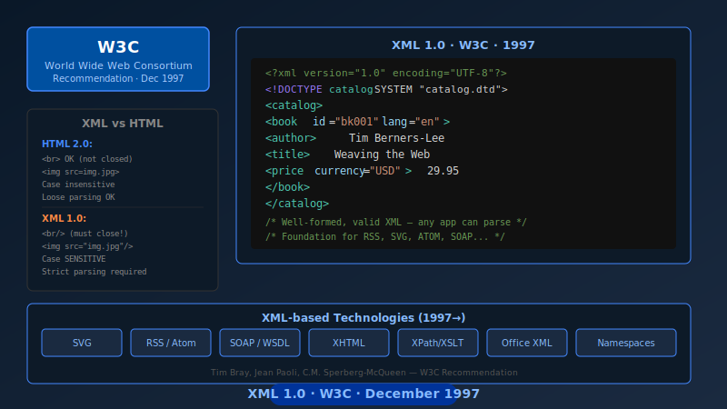
1997년 12월 W3C 기술 브리핑에서 팀 브레이는 “SGML은 무겁지만 XML은 가볍습니다. 서버, 브라우저, 휴대기기 모두 같은 구조를 이해하게 만들 수 있어요”라고
설명했습니다. 참석자는 주문 목록을 XML로 바꿔 보여 주며 “별도 프로그램 없이도 구조가 공유되네요”라고 놀랐습니다.
신문사는 기사 목록을 XML로 배포하기 시작했고, 기업용 소프트웨어 업체는 회사끼리 정보를 주고받으려고 규칙 파일(DTD)과 이름 구역(네임스페이스)을 작성했습니다.
“문서처럼 읽고, 데이터처럼 처리한다”는 시도가 현실이 되었습니다.
XML 1.0은 “태그 이름은 이렇게 쓰고, 속성은 이렇게 표시한다”는 규칙을 담았습니다. 덕분에 서로 다른 프로그램도 같은 구조를 이해할 수 있었고, SVG·RSS 같은 웹
기술과 기업 간 데이터 교환 모두 XML을 바탕으로 자리를 잡았습니다. 훗날 JSON이 인기를 얻어도 “먼저 구조를 정의하자”는 생각은 계속 이어졌습니다.
XML의 가장 큰 장점은 사용자가 데이터의 성격에 맞게 직접 태그를 정의할 수 있는 확장성이었습니다. 기업들은 재고 관리, 금융 거래, 뉴스 배포 등 다양한 분야에서 XML을 도입하여 이기종 시스템 간의 데이터 연동을 자동화했습니다. 문서를 넘어 데이터 자체를 구조화하는 새로운 시대가 열린 것입니다.
XML 1.0은 기계가 읽기 쉬운 데이터 포맷이면서 동시에 사람도 이해할 수 있는 텍스트 기반의 마크업 언어입니다. 데이터의 의미와 구조를 명확히 분리하여 표현함으로써, 이후 등장한 RSS 피드, SVG 그래픽, SOAP 기반의 웹 서비스 등 수많은 현대 인터넷 기술의 핵심 인프라로 활약했
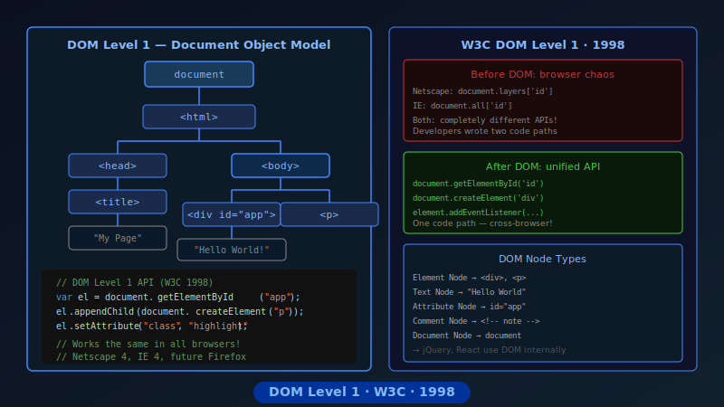
W3C 회의에서 브라우저 엔지니어들은 “문서를 트리처럼 보고, 필요한 부분을 찾아 바꾸자”는 데 뜻을 모았습니다. 넷스케이프와 IE 대표는
`document.getElementById` 예시를 함께 살펴보며 같은 방식으로 구현하겠다고 약속했습니다.
웹 개발자 라셸은 테스트 페이지에서 버튼을 누르면 새 문단이 생기는 코드를 작성했습니다. 그는 “이제 문서를 데이터처럼 다룰 수 있어요”라며 블로그에 경험담을 남겼습니다.
DOM Level 1은 문서를 “부모와 자식이 있는 나무 구조”로 바라보고, 필요한 부분을 찾거나 새로 만드는 표준 메서드를 정리했습니다. 이 덕분에 스크립트가 HTML
구조를 믿고 다룰 수 있게 되었고, 동적인 웹앱의 기본 문이 열렸습니다.
DOM은 HTML 문서를 프로그래밍 언어가 이해할 수 있는 논리적인 트리(Tree) 구조로 변환하는 표준 인터페이스입니다. 이를 통해 개발자들은 `document.getElementById`와 같은 공통된 명령어로 웹 페이지의 특정 요소를 실시간으로 추가, 수정, 삭제할 수 있는 강력한 제어권을 얻게 되었습니다.
DOM Level 1은 웹 문서를 단순한 텍스트가 아닌, 스크립트를 통해 동적으로 조작 가능한 객체(Object)의 집합으로 정의했습니다. 이 표준화된 API의 등장은 웹 페이지가 사용자와 실시간으로 상호작용하는 현대적인 웹 애플리케이션(Web Application)으로 진화하는 결정적인 전환점이 되었
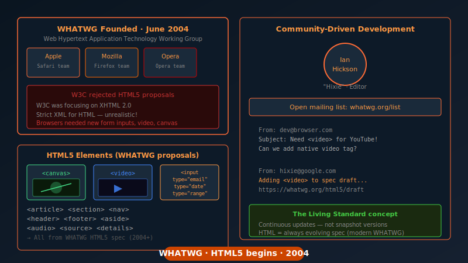
산호세에서 열린 브라우저 회의에서 이안 힉슨은 `canvas`, `input type="email"` 같은 새 요소를 소개하며 “웹도 앱처럼 일하게 만들자”고 강조했습니다.
참석한 엔지니어들은 메모를 나눠 들고 곧바로 구현 계획을 세웠습니다.
회의가 끝나자 WHATWG 메일링 리스트에는 “동영상 태그도 필요해요”, “폼 검증을 자동으로 하고 싶어요” 같은 요청이 쏟아졌고, 초안은 커뮤니티 피드백으로 빠르게
다듬어졌습니다.
WHATWG는 “필요한 기능을 먼저 만들고, 문서를 모두가 볼 수 있게 공유하자”는 모임입니다. 이곳에서 HTML5 초안이 꾸준히 업데이트되면서, 구조와 의미를 코드로 따져
보는 문화가 더욱 활발해졌습니다.
WHATWG는 이론적인 완벽함보다는 실제 웹 개발 현장의 요구와 브라우저의 구현 가능성을 최우선으로 삼는 실용주의적 접근을 채택했습니다. 이들이 주도한 혁신적인 초안들은 훗날 HTML5라는 거대한 표준으로 통합되며, 모바일 시대의 웹 생태계를 지탱하는 핵심 기술로 자리매김했 개발자들은 명함을 자동으로 정리하고 싶다며 `hCard` 예제를 돌려봤습니다. 한 참석자는 블로그 글에 `class="fn org"`를 붙인 뒤
“주소록 앱이 이름과 회사를 자동으로 읽어 가네요!”라고 소개했습니다.
microformats.org에는 금세 사용 사례가 쌓였고, 검색 엔진 팀은 “이 구조라면 일정과 리뷰를 바로 꺼낼 수 있다”며 실험을 시작했습니다.
마이크로포맷은 “새 태그를 만들지 말고, 클래스 이름으로 의미를 알려 주자”는 간단한 약속입니다. 덕분에 웹페이지에 있는 일정, 주소, 리뷰 정보를 기계가 쉽게 모을 수 있게
되었고, 나중에 schema.org 같은 구조화 데이터 표준으로 이어졌습니다.
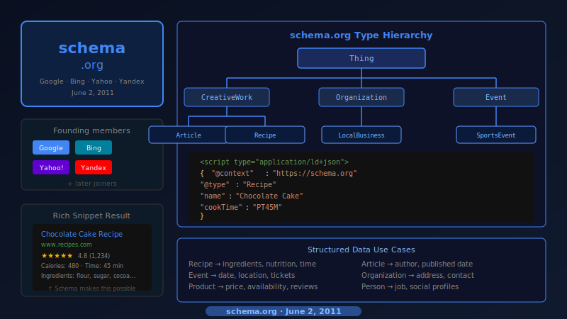
검색 엔진들은 웹 페이지의 내용을 더 정확하게 파악하여 사용자에게 풍부한 검색 결과를 제공하고자 했습니다. 이를 위해 구글, 마이크로소프트, 야후 등 경쟁 관계에 있던 주요 검색 포털들이 이례적으로 협력하여 schema.org라는 통합된 구조화 데이터 표준을 발표했습니다.
웹사이트 운영자가 이 표준 어휘를 사용하여 상품의 가격, 레시피의 조리 시간, 영화의 평점 등을 마크업하면, 검색 엔진은 이를 인식하여 검색 결과 화면에 시각적으로 돋보이는 '리치 스니펫(Rich Snippets)' 형태로 노출해 주었습니다. 이는 웹사이트의 방문자 유입을 크게 늘리는 효과를 가져와 산업계의 자발적인 표준 도입을 이끌어냈습니다.
schema.org는 웹 상의 데이터를 설명하기 위한 공통의 어휘 사전(Vocabulary)입니다. 검색 엔진뿐만 아니라 AI 음성 비서, 소셜 미디어 플랫폼 등 다양한 서비스가 웹의 정보를 동일한 기준으로 해석하고 활용할 수 있는 범용적인 데이터 상호 운용성 체계를 구축했다는 점에서 큰 의의를 가집니다.
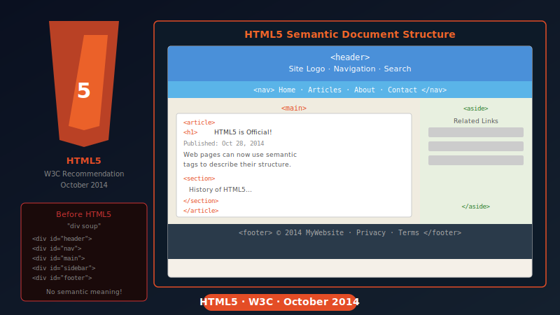
오랜 기간의 논의와 개발 끝에 W3C는 마침내 HTML5를 공식 웹 표준으로 권고했습니다. HTML5의 가장 눈에 띄는 변화 중 하나는 문서의 구조를 명확히 설명하는 시맨틱(Semantic) 태그의 전면적인 도입이었습니다. 과거에는 의미 없는 `
` 태그에 의존하여 화면을 분할했다면, 이제는 `
HTML5의 시맨틱 마크업은 웹 문서가 시각적인 레이아웃을 넘어 정보의 논리적 의미와 계층 구조를 스스로 설명할 수 있도록 진화했음을 의미합니다. 이는 웹 접근성(Web Accessibility)과 검색 엔진 최적화(SEO)를 동시에 달성하는 현대적인 프론트엔드 개발의 핵심 원칙으로 확고히 자리 잡았습니다.
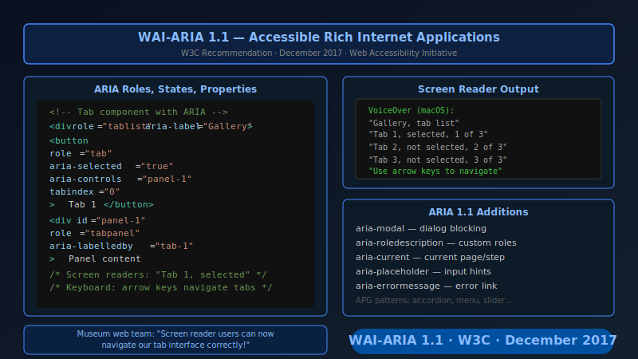
캘리포니아의 한 뮤지엄 웹팀은 탭 컴포넌트를 테스트하면서 ARIA 역할을 적용했습니다. 스크린 리더 사용자 테스터가 “이제 탭 제목과 현재 위치를 정확히 들을 수
있어요.”라고 피드백했습니다.
패턴 가이드는 열린 상태, 키보드 포커스 이동 순서를 표로 정리해, 프론트엔드 팀이 구조를 설계할 때 참고서가 되었습니다.
개발자들은 ARIA 속성을 활용하여 특정 요소가 '현재 선택된 탭'인지, '확장 가능한 메뉴'인지, '오류 메시지'인지를 명확하게 명시할 수 있게 되었습니다. 이 가이드라인은 복잡한 웹 환경에서도 모든 사용자가 정보에 동등하게 접근하고 상호작용할 수 있는 포용적인 디지털 환경을 구축하는 데 필수적인 지침서가 되었습니다.
WAI-ARIA(Web Accessibility Initiative - Accessible Rich Internet Applications)는 HTML의 시맨틱 한계를 보완하여 동적 콘텐츠와 복잡한 UI 컨트롤의 접근성을 보장하는 기술 규격입니다. 시각적 정보에 의존하지 않고도 UI의 역할(Role), 상태(State), 속성(Property)을 기계가 이해할 수 있는 형태로 제공하는 정밀한 구조화 도구입
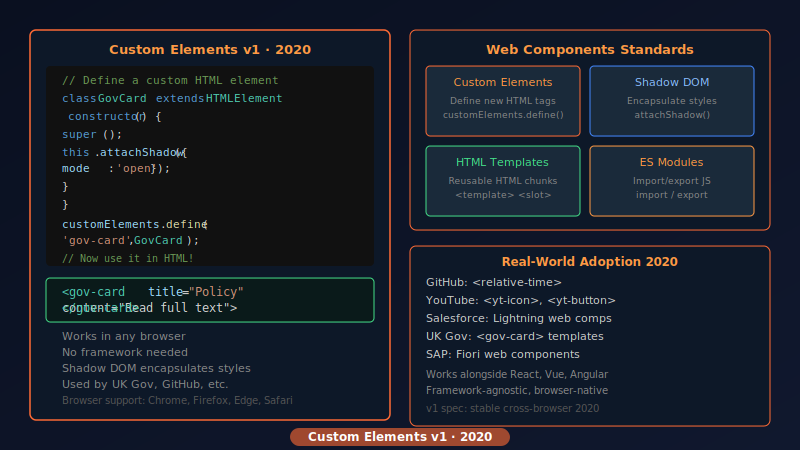
한 공공기관 팀은 `` 컴포넌트를 정의해 콘텐츠를 배포했습니다. 콘텐츠 편집자는 마크다운에 해당 태그만 추가하면 일관된 구조가 생성되는 모습을 보고
만족했습니다.
접근성 엔지니어는 커스텀 엘리먼트 내부에 시맨틱 요소를 유지하도록 리뷰했고, 배포 후 사용자 설문에서는 “페이지마다 같은 패턴을 쉽게 인식할 수 있다.”는 응답이 늘었습니다.
예를 들어, 기업 내부에서 ``이라는 태그를 정의해 두면, 개발자는 이 태그 하나만 작성해도 내부에 필요한 이미지, 텍스트, 버튼 구조가 자동으로 완성되도록 설계할 수 있습니다. 이는 코드의 재사용성을 극대화하고, 서비스 전체의 디자인과 구조적 일관성을 유지하는 강력한 도구로 자리 잡았습니다.
커스텀 엘리먼트는 웹 컴포넌트(Web Components) 표준의 핵심 기술로, 개발자가 브라우저의 기본 HTML 태그처럼 동작하는 새로운 요소를 캡슐화하여 정의할 수 있게 해줍니다. 특정 프레임워크에 종속되지 않고 브라우저 네이티브 수준에서 독립적이고 재사용 가능한 UI 모듈을 구축할 수 있는 현대적인 아키텍처를 제공합